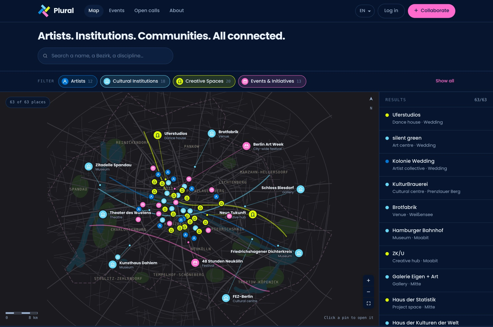
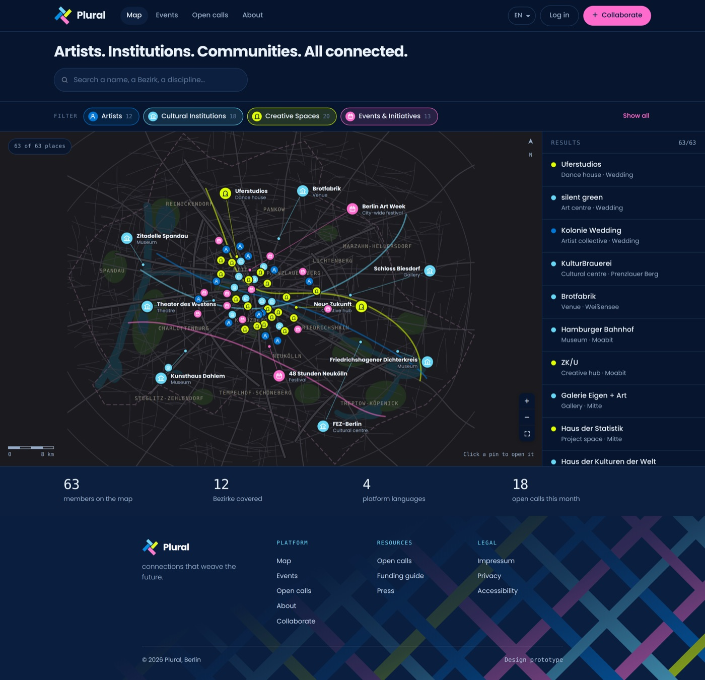

Case study — Product design
Plural
Berlin has no shortage of cultural infrastructure, but the way in runs through people you already know. Plural puts the artists, institutions, creative spaces and initiatives on one open map — in four languages, with no account and no paywall.

Access runs through who you know
Institutions, project spaces, open calls and networks each live on their own site, in their own language, on their own terms. For anyone outside the existing circles — new in the city, working in another language, not already introduced — the city’s cultural life is not hidden so much as scattered. Knowing it exists is not the same as finding the way in.
So the question was not how to list more places. It was what a person actually needs to know before they can act: what this place is, and what is genuinely possible there.
Each layer answers a different question, so they can be read alone or together.
Four layers, not one list
A single pile of 63 pins is a worse map than no map. The entries are split into four layers that can be switched on and off independently, because someone looking for a studio to rent and someone looking for an open call are not doing the same thing. Each filter carries its own count, so the shape of the city is legible before anything is clicked.
Every profile says what the place is and what is actually possible there: open calls, residencies, studio rental, workshops, submissions. That line is the whole point — it turns a directory into something you can act on.

Built, not just drawn
I researched and compiled the 63 entries from the organisations’ own public sites, designed the interface, and built it — one self-contained HTML file, no framework, no build step, no tracking. Four interface languages: English, German, Portuguese, Spanish.
Building it myself kept the design honest. A map that is slow, or unreadable on a phone, or that hides half the city behind a login, fails the people it is supposed to serve — and those are decisions you only really make when you have to implement them.